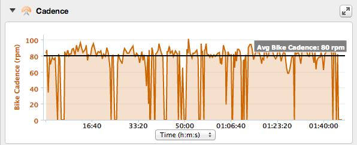
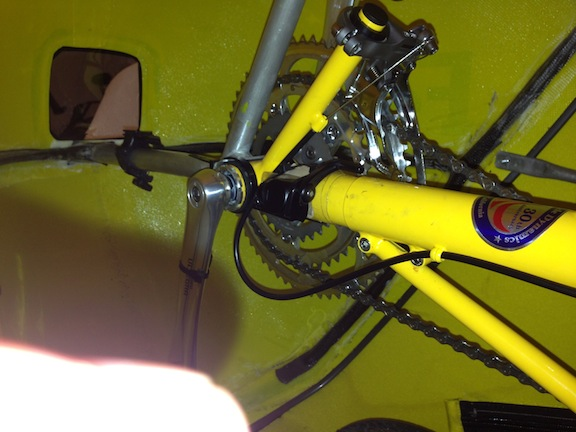
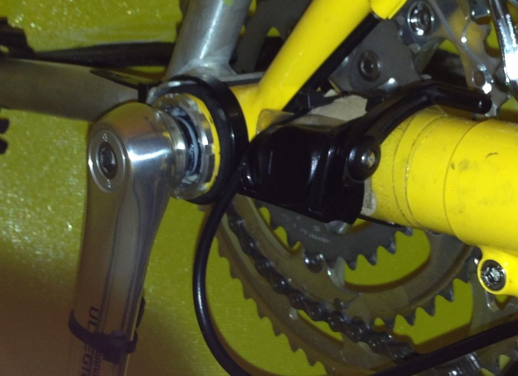

F-40 Installing cadence sensor
15 Aug 2013
Before today’s ride I managed to get the cadence sensor installed.
I’ve always had problems installing the garmin combined cadence/speed sensor on a recumbent. I only use the cadence sensor and basically ignore the speed sensor part (using the garmin GPS for speed).
Because of the large boom size on recumbents I’ve never found a way before to mount the sensor such that you get a reliable reading.
Well today I ignored the mounting instructions from garmin and mounted the sensor on it’s side - see picture below.
Upside is the sensor is extremely reliable, downside is I have to snip the tie wraps when replacing the battery.
The 175 mm cranks only seem to have lowered my average cadence by a couple of RPMs!


